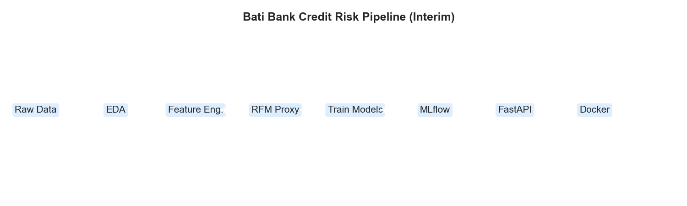
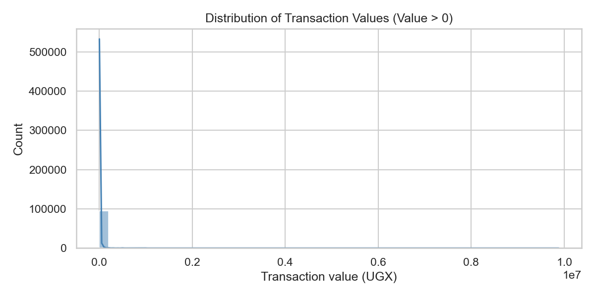
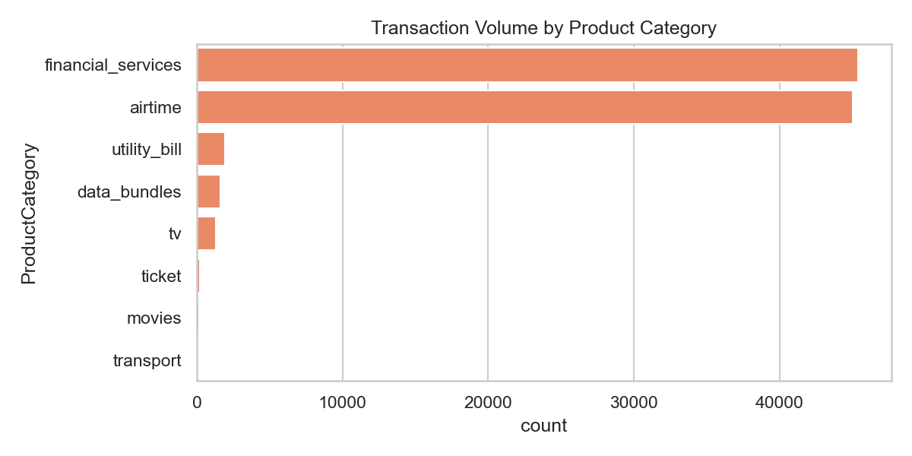
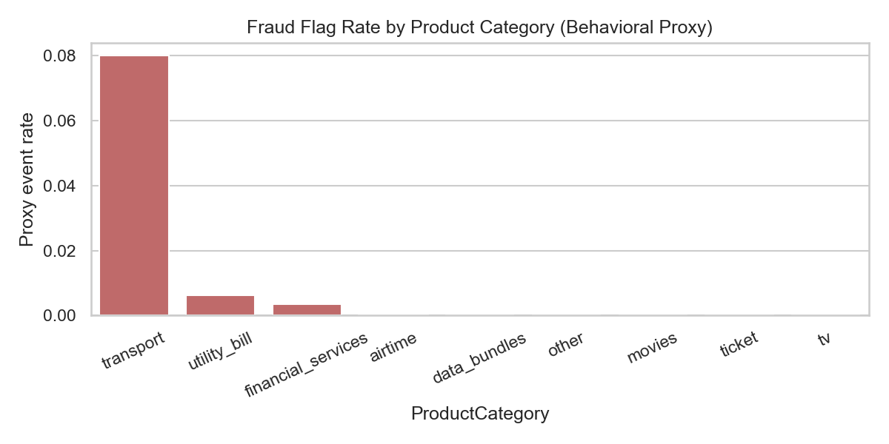
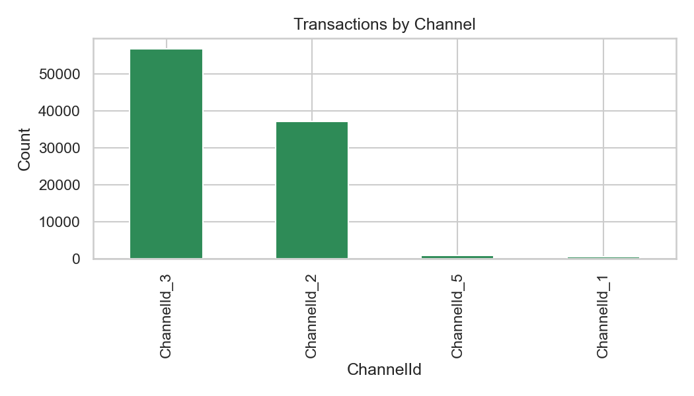
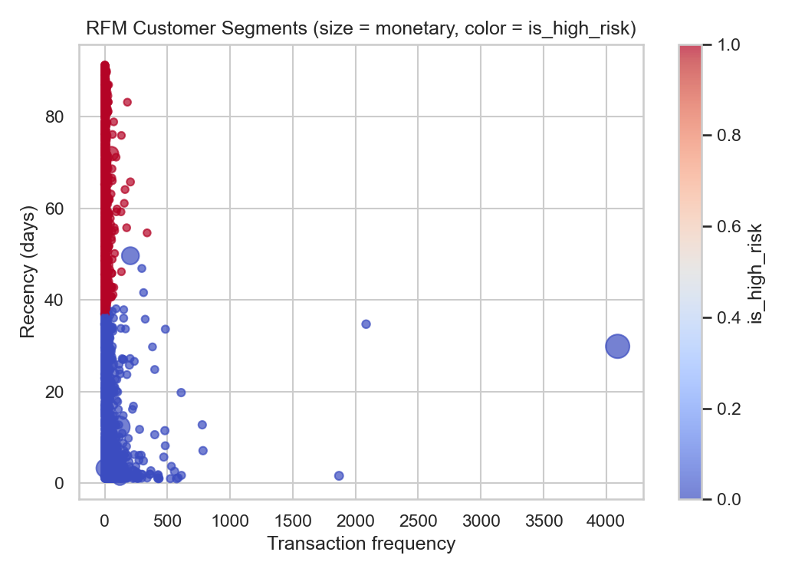

Bati Bank Credit Risk Probability Model
I am working on the Bati Bank Credit Risk Model Challenge, focusing on transaction-level behavioral data from the Xente platform to estimate customer credit risk when a direct default label is unavailable. The main goal is to build analytical and software engineering competencies through reproducible data pipelines, proxy target engineering, machine learning with MLflow, API deployment, Docker, and continuous integration.
This interim report summarizes progress made so far, methods applied, tools used, challenges encountered, and next steps planned for the final submission.
Establish a robust, reproducible, and collaborative environment using GitHub, version control, and CI/CD.
credit-risk-model with correct project root (not nested paths).requirements.txt..gitignore for data, models, MLflow, and environment files.src/, tests/, notebooks/, Docker, CI workflow.
credit-risk-model/ only.Environment is complete, reproducible, and integrated with CI on push to main.
Profile and explore the Xente transaction dataset for data quality and risk patterns.
notebooks/eda.ipynb and src/eda.py helpers.



EDA complete; dataset ready for customer-level feature engineering.
Build customer-level features and binary proxy target is_high_risk.
src/data_processing.py.src/woe_iv.py.
Proxy pipeline tested and documented; modeling dataset exportable to data/processed/.
Train and compare classifiers with hyperparameter tuning and experiment tracking.
model_comparison.csv, best_model_summary.json./health and /predict with Pydantic validation.risk_probability and risk category.main.The project has a solid foundation: EDA, proxy target, ML pipeline, API, Docker, and CI/CD. Ready for final model selection, validation, and stakeholder reporting.
| Task | Description | Hours |
|---|---|---|
| Task 1 | Git & Environment Setup | 8 |
| Task 2 | Data Profiling & EDA | 14 |
| Task 3 | Feature Engineering & RFM Proxy | 12 |
| Task 4 | Model Training & MLflow | 10 |
| Task 5 | FastAPI & Docker | 8 |
| Task 6 | Testing & CI/CD | 6 |
| Total (interim) | 58 | |